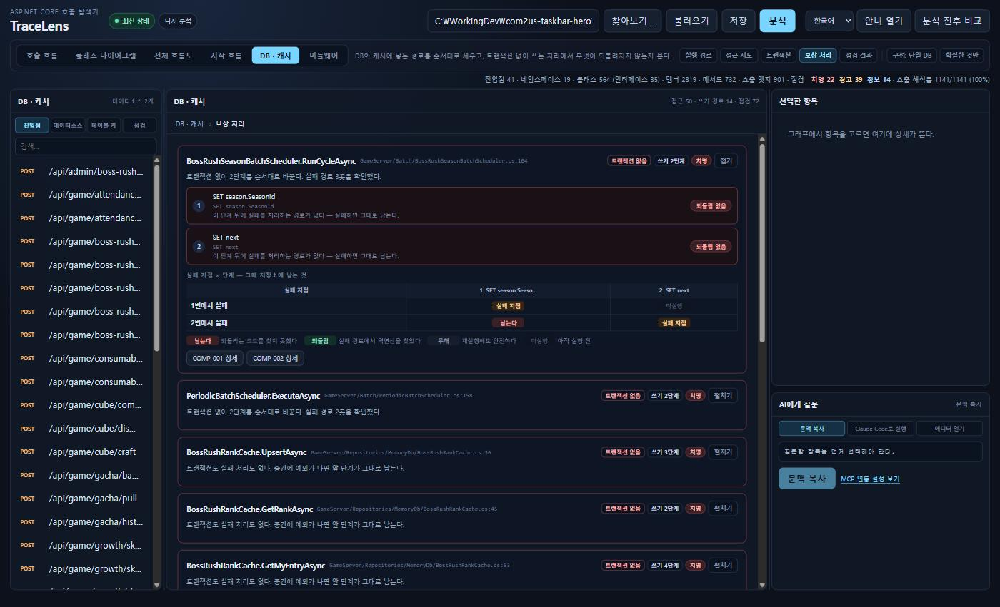

Overview
TraceLens is a local development tool that shows the call path of an ASP.NET Core Web API together with the code behind it, and hands an AI coding agent the context it needs. It draws the method call flow from an HTTP endpoint down through controller → service → repository; switch to the class diagram or flow map to see the shape of the whole codebase. In any view, clicking a box or a member row brings up the actual source, and that selection becomes a task context — with its evidence attached — you can hand to whichever AI tool you use.
localhost. There's no option to make it reachable remotely, and no setting
that allows external binding without authentication. This tool is meant to open an
analysis target solution on a developer's own machine, nothing more.
The six views at a glance
One entry point, step by step
Pick a route, draw up to the branch point, then click ⊕ nodes to dig deeper one step at a time.
The whole solution as UML
Draws every type on one canvas via inheritance, implementation, association, and dependency.
Entry-point map → full path
See every route on a map, then pick one to enter its full, method-level path.
Program.cs, in order
Shows DI registrations and the middleware pipeline as a timeline, in source order.
Compensation checking
Shows, as a grid, what doesn't get undone when a transaction-free write path fails.
Request/response sections & short-circuits
Shows what a request passes through, where it can get cut off, and what still runs afterward.
Build & run
Everyday use (running the tool as-is) and development (changing TraceLens itself) run
differently. Both are handled by run.ps1. If you want to move just the build
output around without the source tree, use dotnet publish separately.
Requirements
- .NET 8 SDK or later
- Node.js 20 or later
- Claude Code CLI — only needed for the ask panel's Run with Claude Code button (that button is the one Claude Code-specific piece). Copying context works without it.
- Codex CLI / VS Code — separate from the button above, needed only if you want to register the TraceLens MCP server directly (see Run with Claude Code for how to connect it)
For everyday use — one command
Builds the client for production and serves both the UI and the API from a single server. This is what you'll normally use.
git clone <repo-url> tracelens
cd tracelens
.\run.ps1
It installs client dependencies → builds the server → builds the client for production,
in that order, then starts the server. The build output goes into
src/TraceLens.Server/wwwroot, so all you need is
http://127.0.0.1:25011 in a browser (opens automatically once ready). Stop
with Ctrl+C.
Running the released build & the CLI
Running .\pack.ps1 in the repository root produces a Windows x64 portable ZIP and a
.NET tool package under artifacts/, plus a manifest.txt holding SHA256
checksums, versions and the manual verification steps. The script only builds —
it never publishes.
The released build carries the web assets (wwwroot) and the examples
(samples) with it, so the UI opens from any working directory and it runs
without the TraceLens source tree or Node.js. Opening the project you analyze still
needs a .NET SDK — the tool's runtime and the target's build environment are different things.
| Command | What it does |
|---|---|
tracelens doctor [--target <path>] [--json] |
Checks the SDK, target format, output permissions, port, MCP host and optional CLIs, and says what to do next. It never installs anything or changes settings, and collects no API keys or environment dumps. |
tracelens analyze <path> [--json] |
Runs one analysis and prints a summary: entry points, nodes, edges, resolution rate, limits. |
tracelens serve [--target <path>] [--port n] |
Starts the UI server, bound to loopback only. |
tracelens mcp --graph <graph.json> |
Starts the local stdio MCP server. |
tracelens demo [--dir <destination>] |
Copies the example into a folder you choose and explains what to look at. |
.sln and .csproj.
.slnx is not supported yet because the MSBuildWorkspace in use cannot open it;
doctor reports UNSUPPORTED_TARGET_FORMAT with that reason rather than
failing obscurely. Support is not "added" by loosening an extension check.
Deploying and running just the build output, without source
run.ps1 and dotnet run both need the source tree and the .NET
SDK present every time you run them. If you want to move only the build output to another
folder or another machine and run it as-is (a teammate's PC where you don't want to share
source, a deployment folder, etc.), use dotnet publish to produce a
self-contained folder.
# 1. Build the frontend for production first (output must land in wwwroot to be included in publish)
cd client
npm install
npm run build
cd ..
# 2. Publish the server to a publish folder
dotnet publish src/TraceLens.Server -c Release -o publish
Everything lands in the folder you pointed -o at (the repo-root
publish/ in the example above): TraceLens.Server.exe (Windows) /
TraceLens.Server.dll, the dependent files including the referenced projects
(TraceLens.Analyzer · TraceLens.Mcp), and the wwwroot/ folder holding the
React build you just made — this one folder runs on its own, with no source code or
Node.js needed. The default publish is framework-dependent rather than
self-contained, though, so the .NET 8 runtime still needs to be installed on the machine
you run it on.
# 3. Run it (Windows)
.\publish\TraceLens.Server.exe
# or run the dll directly with dotnet
dotnet .\publish\TraceLens.Server.dll
The port is hardcoded to http://127.0.0.1:25011 in the source
(Program.cs), so the published build comes up at the same address. Open
http://127.0.0.1:25011 in a browser. Stop with
Ctrl+C or by closing the console window.
If you had registered a path to TraceLens.Mcp.dll for MCP integration
(Run with Claude Code, docs/mcp-setup.md), you'll need to
re-register it with the published folder's path — before publishing it was probably
pointing at bin/Debug/net8.0/TraceLens.Mcp.dll. To publish TraceLens.Mcp the
same way, run dotnet publish src/TraceLens.Mcp -c Release -o publish-mcp
separately.
While developing — editing the frontend and checking your changes
Runs the API server (25011) and the Vite dev server (25012) together. Use this while editing client code, to check changes instantly via HMR (Hot Module Replacement).
.\run.ps1 -Dev
The browser opens at http://localhost:25012, and this dev server proxies
/api requests to the background API server (25011). Stopping with
Ctrl+C cleans up the background API
server too.
Other options
| Option | Behavior |
|---|---|
-SkipBuild | Skips the build and runs the existing build output right away. Use when you haven't touched the code and just want to restart. |
-NoBrowser | Doesn't open a browser automatically. |
-Dev -SkipBuild | Restarts only the dev server, assuming dotnet build has already been run. |
Running directly, without the script
Use this when handling the backend and frontend separately (for example, attaching a debugger to just the server).
# Backend
dotnet build
dotnet run --project src/TraceLens.Server
# Frontend (in another terminal)
cd client
npm install
npm run devdotnet build TraceLens.sln. run.ps1 already does this, so you
usually don't need to think about it.
First run & the guide
Before anything is analyzed you do not get an empty canvas — you get what to try first: start with the example, analyze your own project, what is supported today, and the recipes.
- The example —
samples/OrderApihas four controller routes and four minimal API routes calling the same services and repositories, plus a four-step write path with no transaction. Runtracelens demoto copy it into a folder you choose, then analyze it. - Environment check — "Run environment check" shows the same result as
doctor, in the UI. - Getting started guide — "Show guide" in the header walks five steps (pick a target → analyze → pick an entry point → check the source → copy context). Progress only advances on real completion events, and you can close and reopen it at any time.
- Language — pick Korean or English in the header. The browser language is the default and your choice is remembered. Symbols, routes, code and file paths are never translated.
Screen layout
The screen is structured as: top bar → view-switch tabs → analysis summary line → three-pane workspace. This frame stays the same no matter which view you switch to.
Top bar
- Path field — type the absolute path of the
.slnor.csprojto analyze. - Browse… (찾아보기…) — opens a folder-browse dialog backed by the server scanning local directories (see below).
- Load (불러오기) — picks a previously saved analysis-result JSON file and loads it as-is. Does not re-analyze.
- Save (저장) — downloads the current analysis result as a file (see Save & load).
- Analyze (분석) — runs Roslyn over the entered path and builds a fresh graph.
- Freshness badge — shows whether the code still matches the last analysis (see Freshness & re-analysis).
Analysis summary line
Right below the tab bar, one line shows the counts of entry points · namespaces · classes (including interface count) · members · methods · call edges, along with the graph file size and how long analysis took. If there are findings (critical/warning/info), their counts appear alongside in color.
Three-pane workspace
The left pane holds a list that changes with the view (entry points · namespaces · data sources, etc.), the center pane is the graph/diagram canvas, and the right pane holds the selected item's detail and the Ask panel. Drag the dividers between panes to resize (double-click to reset); the center canvas gets more room as you widen the window.
Clicking updates the detail panel on the right.
Analysis target & configuration
Both a solution (.sln) and a project (.csproj) can be pointed at
as an analysis target.
- Pointing at a solution (.sln) analyzes every project it contains.
- Pointing at a project (.csproj) analyzes only that project and the projects it references — useful for quickly looking at just the service you care about inside a large solution.
The Browse… button opens a dedicated dialog backed by the server scanning local
directories, instead of the browser's own file picker (which doesn't expose absolute
paths). Click into folders to navigate, click a .sln/.csproj
file to select it, then press Select or double-click. ↑ Up goes to the
parent folder, and Esc closes the dialog.
tracelens.config.json
Placing a tracelens.config.json at the root of the analysis target solution
(the folder containing the .sln) lets you tune how analysis runs. Without
one, it behaves exactly per the defaults below, so there's no need to create one unless
you have something specific to adjust.
| Field | Default | Description |
|---|---|---|
entryPointAttributes | HttpGet · HttpPost · HttpPut · HttpDelete · HttpPatch | Methods carrying these attributes are treated as HTTP entry points. |
kindRules | 6 kinds: Controller · Repository · Validator · Infra · Service · Db | Rules that classify a class's kind by name suffix / base type. |
maxCallDepth | 8 | Maximum depth to follow when walking the call graph. |
excludeNamespacePrefixes | System · Microsoft · Swashbuckle | Namespaces starting with these prefixes are excluded from analysis. |
analysisScope | "Solution" | "Solution" (everything) or "EntryPoints" (only what's reachable from entry points). |
includeObjectCreation | true | Whether new X() is also included in the call graph. |
includeMembers | true | Whether to collect field/method members for the class diagram. |
includeInterfaces | true | Whether interface declarations are included in the class list. |
includeStartupFlow | true | Whether to collect data for the "Startup Flow" view. |
includeDataAccess | true | Whether to collect data for the "Data Access" view. |
includeMiddleware | true | Whether to collect data for the "Middleware" view. |
includeCallSites | true | Whether to keep call evidence (callSites). Turning it off shrinks the file, but the detail panel's "call evidence" and "unresolved calls" sections stay empty. |
maxCallSitesPerEdge | 3 | Cap on how many call-site entries to keep for a single edge, so a call inside a loop doesn't blow up the file. |
maxBoundaryCallSites | 300 | Cap on the unresolved-calls (boundary) list. |
db | see below | Configuration describing the shape of your in-house DB/cache layer. Works even when left empty, by guessing from SQL literals and type names. |
An unknown key is reported as a warning and ignored — it never stops the analysis. A value
of the wrong shape is handled the same way: warn, then fall back to the default. Those warnings
also land in the analysis limitations list, so you can see them in the UI.
_comment and $schema are allowed as comment keys, since JSON has no comments.
The db section — sharding, Redis, and compensation settings
Telling TraceLens the naming conventions of your in-house DB layer (custom connection
factories, sharding, Redis wrappers, etc.) improves the accuracy of the "Data Access"
view. Pattern strings only support a * wildcard over the full name
(case-insensitive).
| Field | Description |
|---|---|
queryApis | API patterns that execute SQL. The default includes the Dapper family. |
cacheApis | Cache client API patterns (Redis, etc.). |
connectionFactories | Method patterns that open a connection. The first argument is treated as the shard key. |
shardKeyParameters | Parameter names used as shard keys (e.g. userNo). |
externalApis | State-changing external call patterns (HTTP clients, etc.), used to detect external calls inside a transaction. |
dataSources | Data source name → { kind, shardCount, readOnly, writeOnly, typePatterns }. kind is one of shard · single · cache. The SHARD rule group turns on if any data source is marked as a shard. |
compensation.pairs | Explicitly declare undo pairs that name-based heuristics (Insert↔Delete, etc.) can't catch, as { "do": "...", "undo": "..." }. |
compensation.irreversible | Call patterns with no way to cancel them (e.g. a send/notify API). |
compensation.idempotent | Call patterns that are safe to re-run, so they don't need undoing. |
queryBuilders | The shape of a query builder, as { root, queryType, terminals, joinMethods }. The default covers SqlKata: start at QueryFactory.Query("table") and execute through a terminal like GetAsync or InsertAsync. |
transactionWrappers | Patterns for in-house wrapper methods that take a lambda and open/close the transaction inside it. You don't have to list them: a method whose body contains BeginTransaction* and invokes a delegate parameter is detected automatically. |
cacheWrappers | Patterns for wrappers declared inside the solution that should nonetheless count as a cache client. By default a solution-declared method is not treated as a client — you have to look inside the wrapper to judge the expiry argument, and calling it "no expiry" from the outside would be a false verdict. |
How far query builders are read
Builder-built SQL has no literal to read, so the table name has to be found in the body.
TraceLens walks back from the terminal call to the builder's root
(Query("table")). If that argument is a string constant the table name is
certain; if it is a variable or an interpolated string it is recorded as ?
and estimated. Tables added through join methods are read the same way.
What it cannot read is stated plainly: if the builder is stored in a field or property and
executed from another method, the root is not found and the access is not recorded. The same
goes for a builder library with no matching db.queryBuilders entry. These are not
"no access" — they are not seen, and they show up in the rule catalog and the
limitations list.
{
"db": {
"shardKeyParameters": ["userNo", "friendNo", "targetNo"],
"dataSources": {
"GameDb": { "kind": "shard", "shardCount": 8, "typePatterns": ["*IShardConnectionFactory"] },
"GameDbReplica": { "kind": "single", "readOnly": true, "typePatterns": ["*ReplicaConnectionFactory"] },
"Redis": { "kind": "cache", "typePatterns": ["*IGameCache", "*RedisGameCache"] }
},
"compensation": {
"pairs": [{ "do": "InsertMemberAsync", "undo": "RemoveMemberAsync" }],
"irreversible": ["*PushClient.SendAsync"],
"idempotent": ["*IGameCache.RemoveAsync"]
}
}
}Changes to the config only take effect after you re-analyze.
Freshness & re-analysis
TraceLens doesn't watch for file saves and re-analyze automatically. Instead, a badge always shows whether the last analysis still matches the current code, and re-analysis happens only when you explicitly ask for it.
(the badge follows the UI language; shown here as Fresh · Changed 3 · Checking… · Not analyzed · Unknown)
The badge automatically re-checks status every 30 seconds. That check is a file list and hash comparison only — it never runs an analysis. In the Changed state, a number shows how many files changed, and hovering shows the list of changed files (or the last analysis time) as a tooltip. Pressing Re-analyze next to the badge re-analyzes on the spot, and the view/selection/filters you were looking at are kept as-is (only selections pointing at code that no longer exists get cleared).
| State | Meaning |
|---|---|
| Up to date (fresh) | Every recorded input matches what is on disk. |
| Changed (stale) | Something changed or was deleted, a new .cs appeared, or a config input changed. |
| Unknown | The check could not cover it — the analysis root is missing, or this analysis was saved in an older format with no freshness inputs. It is never reported as "fresh" in that case; re-analyze to also cover new files and config changes. |
.sln/.csproj, tracelens.config.json,
Directory.Build.props/targets, Directory.Packages.props,
global.json, and the set of .cs files under the project folders.
Expanded MSBuild imports and source-generator output are not tracked, and that limitation is
reported alongside the result.
Save & load
Analysis can take anywhere from a few seconds to tens of seconds. Save the result to a file if you want to reopen the same result later, or share it with someone else.
- Save (저장) — downloads the current analysis result as
solution-name.analysis-date.tracelens.json(triggers the browser's "Save As" dialog). - Load (불러오기) — picks a saved JSON file and loads it onto the screen as-is. Does not re-analyze — you're looking at a snapshot from that point in time.
Six views
Switch between them from the top tabs. Switching views swaps the left list and center canvas together as one set, while the detail/ask panel on the right stays put.
Call Flow — drill into one entry point step by step
Pick a route on the left and it first draws only up to the branch point from that
entry point. Click a node marked ⊕ to expand its calls one level deeper —
rather than drawing the whole graph at once, it widens exactly as far as you need.
Clicking a node shows, on the right, that method's signature, access modifier,
callers/callees, and actual source.
- Left panel: entry points listed as HTTP method + route.
- Top-right "Level N": how many levels you've expanded so far.
- Use the breadcrumb to step back through levels you've expanded.
The detail panel adds two more sections below that: call evidence and
unresolved calls (boundary). Call evidence lists, for every confirmed edge into or out
of this method, the other method, its file:line, the resolution kind (direct call,
DI registration, single-implementation guess, etc.) and a confidence badge — so you can see
right there why the edge exists. Boundary is a separate list of calls where the analyzer
did not create an edge because the symbol was ambiguous or unresolved — an empty list
means this method had no such unresolved calls, not that it has no calls at all. If the
selected method is itself an entry point (a controller action, say), its route also gets an
estimated badge with the reason next to it when applicable. These sections appear the same
way whenever you select the same method from Class Diagram, Full Flow Map, or Startup Flow,
since they share the same detail panel.

Class Diagram — the whole solution as UML, at a glance
Draws every type as a UML box (name / fields / methods, three tiers) on one canvas. The
default layout is tree (hierarchical) — layered by relationship direction (for
inheritance/implementation, the parent type sits to the left); edges that skip layers get
routed through waypoints to reduce crossings. Flip direction with
→/↓, or switch to package layout to group by namespace.
Four kinds of relationships are drawn as distinct line styles.
| Shape | Relationship | Where it comes from |
|---|---|---|
| Inheritance | baseTypeId |
|
| Implementation | interfaceIds |
|
| Association | the type of a field/property (mostly DI injection) | |
| Dependency | call edges not already covered by the three relationships above |
Since the goal is to draw everything, instead of trimming nodes there are density controls.
- Collapse members (fields/methods) — collapsing shrinks box height a lot.
- Toggle each of the 4 relationship kinds individually — dependency is off by default (it produces the most edges and fills the screen fastest).
- Namespace checkboxes to show/hide by package.
- "1 hop from selection only" — draws only classes directly connected to the selected one.
- Zoom 50 / 75 / 100% / fit.
Past 150 classes, it automatically starts with members collapsed + dependency off + zoom-to-fit, and prompts you to narrow the scope.

Flow Map — from an entry-point map to the full path
The default screen is a class-level map with controller boxes and their routes
listed as rows. Clicking a route row takes you into the full, method-level path
for that entry point, with a breadcrumb back to the map.
Reached methods are grouped into class boxes, and lines connect row ↔ row to show which
method calls which. Sub-calls hidden by the depth limit (2 / 3 / 4 / all) show as
+n to the right of that row, and recursive self-calls are marked with
↺.

Startup Flow — the host configuration, in the order it actually runs
Reads Program.cs top to bottom and shows, as a two-track timeline (service registrations /
middleware pipeline), which interface is registered to which implementation with what
lifetime (Scoped / Singleton / Transient), and the order of the
app.UseXxx() / MapXxx() middleware and routing pipeline.
Extension methods defined inside the solution (like AddFixtureServices())
start collapsed and expand on click to show what they actually register. This view isn't
a call graph — it's a separate timeline built by reading only the host configuration files.
The classic layout (.NET Core 3.1-5) is read too. When Program.cs only holds
CreateHostBuilder and the registrations and pipeline live in
ConfigureServices / Configure inside Startup.cs, both files
are read in source order and merged into one timeline. The receiver is decided by
parameter type (IServiceCollection / IApplicationBuilder), not by
variable name, so the parameter does not have to be called app.
If no host configuration is found at all, that fact is recorded under limitations in the
analysis diagnostics — the screen never goes quietly blank.

Data Access — what changes, in what order, and what's left behind on failure
Gathers which storage is read/written and what from SQL literals and cache calls, and presents it across five sub-views. Switch between them from the left list and the toolbar at the top.
| Sub-view | Contents |
|---|---|
| Execution path | Pick one entry point and list, step by step, the order in which that path touches storage. |
| Access map | A class × table/key read/write matrix. |
| Transactions | Execution order inside a transaction boundary, how many connections it spans, and external calls made inside it. |
| Compensation | The centerpiece of this view. See below. |
| Findings | A list of DB/cache rule violations (SHARD/TX/COMP/CACHE/CONN/RW/PERF/SEC), each with evidence and a confidence level. |
Compensation (manual rollback) checking — finds paths that touch storage more than
once without a transaction, determines at each step whether the failure path
(catch / early return) contains an undo, and lays out
a grid answering "if step i fails, what's left behind?" A red cell means no undoing
code was found there. It also catches the easy-to-miss case — via rule
COMP-006 — where a catch has an undo but an early-return path
like if (!ok) return doesn't.
Sharding is opt-in — the SHARD rule group and the "shard key" step only turn on when
tracelens.config.json's db.dataSources defines a shard. The
"Config: sharded/single DB" chip in the top toolbar shows which configuration is
currently in effect.

Middleware — what a request passes through, and where it can short-circuit
Lays out the app.UseXxx() registration order as-is, and for middleware
defined inside the solution, opens up the InvokeAsync body to split it into
on-request / on-response sections around the _next call. Branches that
end without calling _next are flagged as short-circuit points, shown
together with their status code.
| Sub-view | Contents |
|---|---|
| Pipeline | Middleware registration order and the request/response section code for each step. |
| Short-circuit points | Shows, side by side, what doesn't run when a request gets cut off there, and what still runs as response post-processing. |
| Findings | A list of MW rule violations — authentication/authorization/CORS ordering, middleware that takes a Scoped service through its constructor, middleware registered after a terminal that never runs, and so on. |
Three kinds of step — middleware, endpoint registration, terminal
Not every app.UseXxx() line is the same thing. Each pipeline step carries a kind.
| Kind | What it is |
|---|---|
| Middleware | An ordinary step a request passes through in order — UseAuthentication, UseCors, and so on. |
| Endpoint registration | A line that only registers: MapControllers(), MapGet(), MapOpenApi(). The actual execution happens at the very end of the pipeline, so middleware registered after this line still runs normally. |
| Terminal | A step that ends the request here. There are exactly two: UseEndpoints(...) and app.Run(delegate). Middleware registered after one of these does not run (MW-012). |
The distinction matters because treating MapControllers() as a terminal makes the
tool wrongly claim that an authentication middleware registered after it "never runs". That was
fixed in 0.8.0, and it removed 3 false MW-012 findings on a real project.

A note on language
Rule names and descriptions are shown in English. Individual findings — the "what / why / suggested fix" text on each hit — are shown in the language the analyzer wrote them in, which is Korean. They are composed at analysis time out of your own symbol names, table names and line numbers, so they cannot be translated ahead of time, and the tool does not pretend otherwise. The evidence itself (file, line, symbol) is language-neutral.
Findings, in general — confidence and evidence
Data Access and Middleware findings always come with these two badges together.
확실 determined statically, with certainty 추정 inferred from naming conventions etc. — check the evidence chain too.
Severity has three levels — 치명 경고 정보 (critical/warning/info) — and the toolbar filters by all/critical/warning/info. Rules that aren't checked also stay listed in the catalog as "off," so you always know what isn't being looked at.
Asking an AI agent
In any view, selecting an entry point, method, class, namespace, finding, write path or
middleware step makes the Ask AI panel build a task context from it.
That context comes from one place on the server (POST /api/context), so
the clipboard, the in-app run and the MCP tools all get the same thing.
It is not tied to any one AI tool.
What goes into the context
- Your intent (understand code · plan a change · review a change · investigate data) and question, plus the identifiers of what you selected
- Analysis time ·
snapshotId· freshness · analysis scope, and the significant unresolved reasons - The selected method's signature and a verified source range — marked
(
snapshot/current) with whether it still matches the analysis - The representative call path from the entry point to the target, and the evidence for each call site (direct call · DI registration · single-implementation guess)
- Direct callers and callees, plus related database, cache and middleware findings
- Test candidates found in the graph — not the result of running any test
- What was omitted for length, and how to fetch more
Length is short · balanced · detailed. It is implemented as deterministic caps on characters, nodes and source lines, so the same selection with the same budget always produces the same context. The token count shown is estimated from character count, not a model tokenizer, and is labeled as an estimate.
Check before you send
The preview lists the files included, whether source text is in there, the length, what was omitted, and the limitations. The analysis is local, but asking an external AI sends this content to that service. There is an option to leave source text out and to exclude files by path; automatic secret detection alone is not treated as a safety guarantee.
Copy context
Copies the assembled Markdown context to the clipboard. Paste it into Claude Code, Codex CLI or anything else you use. This works for any selection — including classes and namespaces that have no runnable node.
Run with Claude Code
Sends the question from inside the browser and streams the answer back. The server runs the
Claude Code CLI headlessly with the same context as the prompt and the TraceLens MCP tools
attached. No registration is needed — each request writes a
.tracelens/mcp.json matching the current analysis and passes it to the CLI.
This button is the one Claude Code-specific piece.
- The Claude Code CLI must be on PATH.
- In-progress logs (tool calls and so on) expand under "log lines".
- Selecting something else while an answer streams cancels the request.
Connecting it to your own AI tool
"Show MCP setup" in the panel prints a configuration snippet with the real paths for your target and installed host filled in. Nothing is overwritten — add what it prints to the matching file.
| Tool | Config file | Format |
|---|---|---|
| Claude Code | .mcp.json at the analysis target root | JSON, under mcpServers |
| Codex CLI | ~/.codex/config.toml | TOML, [mcp_servers.tracelens] |
| VS Code | .vscode/mcp.json in the workspace | JSON, under servers |
Twelve tools are available. Inputs and returns are documented in docs/mcp-setup.md.
| Tool | What it returns |
|---|---|
get_analysis_status | Target, timestamp, freshness, capabilities and diagnostics. Call it first to know how much to trust the rest. |
get_context | The same task context this panel previews |
get_entrypoint_flow | One entry point's bounded call path and its boundaries |
get_findings | Database and middleware findings with confidence, plus disabled rules |
get_impact | Entry points that may be affected by changing a method |
compare_snapshots | Differences against a saved baseline |
get_node · get_source · get_callers ·
get_callees · get_entrypoints · search_symbol |
Nodes, source, adjacent calls, entry points and symbol search. List tools page with
limit/cursor. |
snapshotId; passing it back as expectedSnapshotId gets you a
SNAPSHOT_MISMATCH if the analysis changed in between. Do not treat "the tools appear
in the list" as success — check that a real question quotes real files and line numbers.
Open in editor
Opens the selected location in VS Code. The server runs code --goto file:line, and
falls back to a vscode://file/... URI when the code CLI isn't found
(this button just opens the location — no question needed).
Change impact
Select a method and press "Find affected APIs" in the Change impact panel on the right. It walks callers backwards to the HTTP entry points that reach it, and shows one representative shortest path per entry point with the evidence for each step. Picking one takes you into the existing call flow view — several entry points are never unfolded into a single graph.
Test candidates come along as well, split into reached in graph and name match only. "No candidates" and "test coverage is sufficient" are not the same statement.
Before / after comparison
The loop for checking what actually changed after an AI edited the code. Open "Before / after" in the header and go in order.
- Save as "before" — stores the current analysis as a baseline under
.tracelens/history/<snapshotId>/graph.json. - Let your AI tool change the code.
- Re-analyze and compare — even here, re-analysis only runs because you pressed it.
| Section | What you see |
|---|---|
| Endpoints | Added, removed, and handler changes |
| Methods | Added, removed, signature changes and body changes. The body fingerprint distinguishes whitespace/comment-only edits. |
| Calls | Edges added and removed, and changes in the resolution evidence or confidence of an existing edge |
| Data & cache access | Access added and removed, and moves in or out of a transaction |
| Checks | New findings and findings that disappeared |
| Possible renames | Removed/added pairs with the same body fingerprint. Never auto-confirmed. |
As baselines pile up you get a prompt to clean them out. They are not kept without limit.
Four recipes
The app's first screen and this document point at the same recipe ids. Picking a recipe in the app switches to the right view and shows a guidance strip. The prompts below can be copied as-is.
| Recipe | What you do in the app | What to ask the AI | What to check |
|---|---|---|---|
Understand an API you have never seenunderstand-api |
Pick an entry point in the call flow and follow the representative path and source. | "Explain this API from input to storage, citing the evidence ids. Also state what cannot be confirmed statically." | Check that each factual claim maps to the source. |
Plan a changeplan-change |
Select the target method, check the affected APIs under Change impact, then build the context. | "Propose where to change, which APIs are affected, and which tests are needed, keeping the current separation of concerns." | Check the evidence behind the suggested locations and test candidates. |
Investigate a data or cache mismatchinvestigate-data |
Pick a write path and its findings under Data & cache → compensation. | "Identify updates left behind by a mid-way failure, separate the estimated parts, and propose a fix." | Check the real code and the failure path. |
Review a change made by AIreview-ai-change |
Save a baseline → let the AI edit → re-analyze explicitly → compare. | "From this diff, point out unintended path changes, remaining checks, and gaps in verification." | Check the analysis diff and your local test results separately. |
Usage scenarios
Real situations where you'd reach for this tool, and how to drive the screen once you're there.
Get the overall structure of a codebase you just joined
- Type in a path or use Browse… to pick a
.sln, then press Analyze. - Switch to Class Diagram, change layout to package, and skim the size of each namespace first.
- Turn off namespaces you don't care about with the left checkboxes to narrow the view.
- Switch layout to tree to check inheritance/implementation relationships (interface → implementation).
- Move to Flow Map and skim the entry-point map to get a feel for what APIs exist.
Explain exactly what one API endpoint does
- In Call Flow, find and pick that route from the left list.
- Click
⊕nodes to expand only as far as you need (don't expand everything at once). - Click the method you're curious about to see its signature and actual source on the right.
- In the Ask AI panel, set the intent to "understand code" and either copy context or run with Claude Code asking something like "explain this API from input to storage, citing the evidence ids".
Check the blast radius before a refactor or change
- In Class Diagram, search the left panel for the target class and select it.
- Turn on "1 hop from selection only" in the toolbar — only what's directly connected to this class remains.
- Turn on dependency too, in the relationship toggles, to see what actually calls this class.
- Click an affected class and jump to "view in Flow Map" to see which entry points go through this path.
Check whether code touching multiple stores without a transaction is safe
- Switch to Data Access and change the sub-view to Compensation.
- Pick the target entry point or write path on the left.
- Look at the "failure point × step" grid for red cells (where no undo was found).
- Click a cell to see the evidence chain and confidence level (certain/inferred) on the right.
- If needed, ask the Ask panel right away — "how should I add compensation here?"
Suspect an auth/CORS bug is caused by middleware order
- Switch to Middleware and check registration order in the Pipeline sub-view.
- Switch to Short-circuit points to see where requests get cut off and with what status code.
- Compare, side by side, what doesn't run at that point versus what still runs as response post-processing.
- Check the Findings sub-view for ordering-related rules (auth/authz/CORS order, middleware registered after mapping, etc.).
Check whether DI registration got tangled at startup
- Switch to Startup Flow and read Program.cs's service registration order from the top.
- Click extension methods defined in the solution (like
AddXxxServices()) to expand and see what they actually register. - Click a registration entry and follow "view in this class" through to the class diagram.
- Check the middleware pipeline track on the same screen too.
Keep the graph current after the code changes
- Check the freshness badge at the top. If it says "Changed," a number shows how many files changed.
- Press Re-analyze next to the badge.
- The view/selection/filters you had stay exactly as they were after re-analysis finishes (only selections pointing at code that's gone get cleared).
Share an analysis result with a teammate, or reopen it without re-analyzing
- After analysis finishes, press Save at the top to download the JSON file.
- Hand this file to a teammate, or keep it outside the repository.
- Whoever receives it picks it with Load on their own screen and sees the same result immediately (no re-analysis).
Tell the tool about an in-house DB layer (sharding, Redis, etc.) it doesn't recognize
- Create or open
tracelens.config.jsonat the root of the analysis target solution. - In
db.dataSources, write the real connection-factory type-name patterns and theirkind(shard/single/cache). - If there are undo pairs that naming conventions can't catch, add them directly to
db.compensation.pairs. - Re-analyze and confirm the Data Access view's access map and compensation results now match reality.
Learn more
README.md— project overview, quick start, supported scope, tech stack.docs/mcp-setup.md— registering the MCP server with Claude Code, Codex CLI and VS Code, plus all twelve tools.docs/data-contract.md— thegraph.jsonschema (v7), API and MCP contracts, error codes, and migration rules.CONTRIBUTING.md— how to report a missed call, the verification commands, and the promises about wording.CHANGELOG.md— release notes (updated by hand) and known limitations.CLAUDE.md— design constraints and coding conventions for developers/agents working in this repository (Korean; written for contributors rather than users). See alsodocs/data-contract.mdandCONTRIBUTING.md.